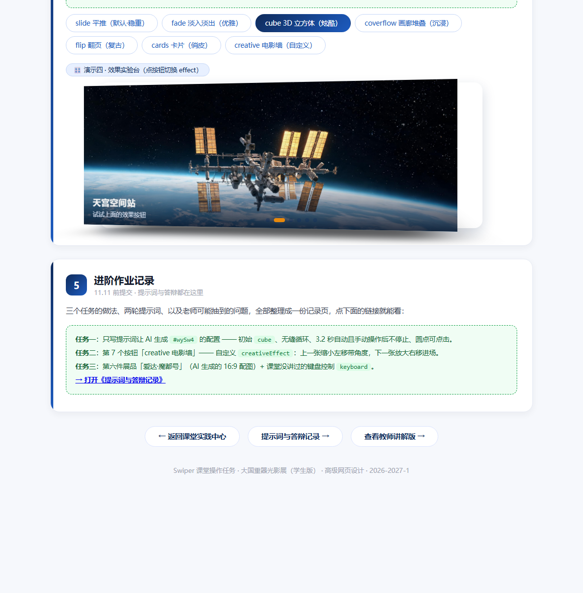
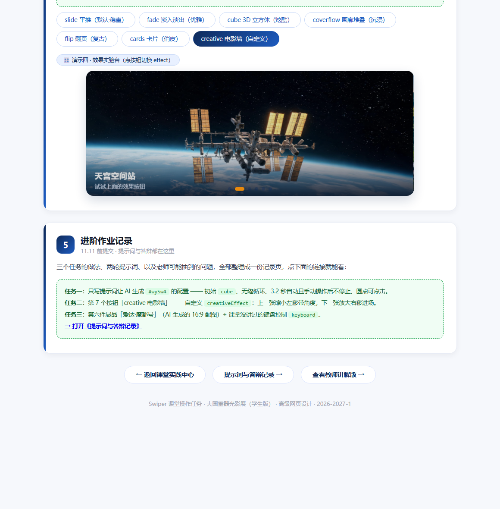

李嘉蕊 · 24002120526。这份记录和 526.html 是一对：所有提示词、AI 回答、验证截图、答辩答案都留在这一页，老师抽查时直接对着看。
先把作业里的四条需求拆成可验收的参数，再动手写提示词。拆不清楚就等于没要求——第一轮写成什么样，基本取决于这一张表。
| 作业里的原话 | 落到配置上的参数 |
|---|---|
| 无缝循环 | loop: true |
| 3.2 秒自动翻页，手动操作后不停止 | autoplay: { delay: 3200, disableOnInteraction: false } |
| 圆点分页器可点击 | pagination: { el: '#wyPag4', clickable: true } |
| 初始效果为 cube | effect: 'cube' |
new Swiper('#wySw4', {...}) 的完整代码，不要解释。new Swiper('#wySw4', {
loop: true,
autoplay: { delay: 3200, disableOnInteraction: true },
pagination: { el: '#wyPag4' },
effect: 'cube'
});
两处不对：disableOnInteraction 被写成了 true（我拖一下它就永久停摆了，需求是"手动操作后不停止"）；pagination 漏了 clickable，圆点成了纯装饰，点不动。
我把"3.2 秒自动翻页"和"手动操作后不停止"缩成了一句"自动翻页"，把后半句吞掉了；圆点那条我只写了"底部圆点分页器"，没写"能点"。AI 不会替我补没说的东西，它按最省事的默认值给：disableOnInteraction 默认是 true，pagination 不写 clickable 就是不可点。
loop: true；② 自动播放必须是 autoplay: { delay: 3200, disableOnInteraction: false }——注意是 false，我要的是"用户拖动之后自动播放继续跑"；③ 分页器写成对象形式 pagination: { el: '#wyPag4', clickable: true }，圆点必须点得动；④ effect: 'cube'。另外 speed 给 800，方便我看见切换过程。写完后逐条对照我上面四条，说明每一条落在哪个字段。new Swiper('#wySw4', {
loop: true, // ① 无缝循环
autoplay: { delay: 3200, disableOnInteraction: false }, // ② 3.2 秒，手动后不停
pagination: { el: '#wyPag4', clickable: true }, // ③ 圆点可点
effect: 'cube', // ④ 初始立方体
speed: 800
});
这一版四条全部对上了，直接粘进 526.html 的 createSw4() 里就是现在页面上跑的那份。

打开 526.html，演示四第一眼就是 cube：cube 按钮高亮、卡片带 3D 透视，底部 6 个圆点自动 3.2 秒一翻
四条需求逐条对上：循环、3.2 秒自动且拖动后不停、圆点能点、初始就是 cube——两轮提示词的差别只在"把没写的写清楚"，代码本身一点都不难。
Q1：第一版提示词漏掉了哪个需求？
漏了两处：一是把"手动操作后不停止"吞掉了，只写了"自动翻页"；二是圆点只写"分页器"没写"可点击"。结果 AI 给了 disableOnInteraction: true 和没有 clickable 的 pagination。
Q2：第二轮你是怎么"说清楚"的？
把四条需求编号，每条直接给出目标字段和目标值（例如"必须是 disableOnInteraction: false"），再要求它逐条对照说明落在哪个字段——用验收标准倒逼输出，比形容词管用。
Q3：AI 第一次给的代码错在哪？
错在 disableOnInteraction: true：这是"用户一交互就关掉自动播放"，和需求正好相反；另外 pagination 只给了 el，缺 clickable，圆点不能点。
官方 demo 里 effect: 'creative' 只做一件事：不发新效果，只让你给"上一张"和"下一张"各写一段位置。它靠 creativeEffect 里的 prev / next 两个对象，描述"退场那张去哪里"和"进场那张从哪来"。我读出来的对应关系是：
| 字段 | 控制什么 |
|---|---|
translate | [x, y, z] 三轴位移，支持百分比。x 为正是往右、为负往左；z 为负是往屏幕里推（变小变远）。这是"左移 / 右移进场"的来源。 |
scale | 缩放倍数。prev 小于 1 = 退场那张缩小，next 大于 1 = 进场那张放大。 |
rotate | [rx, ry, rz] 三个轴的旋转角度（度）。第三个值就是"带角度"的那个歪。 |
opacity | 透明度。退场压暗成背景，进场保持亮。 |
shadow | 是否给卡片投一层阴影，做出"卡片叠在桌上"的层次。 |
if (effect === 'creative') {
cfg.creativeEffect = {
prev: { // 退场那一张的落点
shadow: true,
translate: ['-22%', 0, -120], // 往左 22%，后退 120px 拉开纵深
rotate: [0, 0, -7], // 绕 Z 轴歪 7 度
scale: 0.82, // 缩小到 82%
opacity: 0.55 // 压暗，退成背景
},
next: { // 进场那一张的起点
translate: ['18%', 0, -120], // 从右侧 18% 推上来
scale: 1.06, // 略放大，进场更有存在感
opacity: 0.9
}
};
cfg.speed = 900; // 走慢一点，位移看得清
}
prev 控"已经看过的那一张接下来缩到哪、歪多少、暗到什么程度"——在我的配置里它缩小到 82%、左移 22%、歪 −7 度、透明度 0.55，像被抽到一边的旧胶片；next 控"还没上场的那一张从哪、从多大开始推上来"——从右侧 18%、放大到 1.06、透明度 0.9 进场。两者合起来，翻页时看上去就是"上一张退到左边缩小歪着，下一张从右边放大推上来"的电影选片墙。

点第 7 个按钮后 creative 高亮、配置生效；左右那一套位移只发生在切换的 900 毫秒里，静止帧拍到的就是当前这一张
Q1：transform 里的百分号是相对谁？
相对这一张 slide 自身的宽 / 高，不是相对容器也不是相对屏幕。所以 '-22%' 是"自己宽度的 22%"，换个尺寸的轮播它依然对得上。
Q2：改哪个数能让卡片转 20 度？
改 rotate 的第三个值：rotate: [0, 0, -20]（逆时针 20 度）或 [0, 0, 20]（顺时针 20 度）。前两个值是绕 X / Y 轴翻，会做出"往前扑"或"侧翻"的效果，和作业要的平面歪角不是一回事。
首艘国产大型邮轮，2024 年 1 月首航。配图按作业要求用 AI 生成、横版 16:9，提示词写的是海上航行、白船身带蓝金饰带、傍晚暖光、船头朝右、无文字水印。生成的图存成 swiper-imgs/modu_1.jpg，slide 用和其它五件完全一样的结构（图 + 标题 + 一行说明），所以四个演示台都是 6 张。
<div class="swiper-slide">
<img src="swiper-imgs/modu_1.jpg" alt="爱达·魔都号">
<div class="wy-cap">
<h3>爱达·魔都号</h3>
<p>2024 年 1 月首航 · 首艘国产大型邮轮</p>
</div>
</div>
AI 生成的 16:9 配图：爱达·魔都号海上航行
作业让在 keyboard / mousewheel / zoom / parallax 里任选一个，我选 keyboard——它对触摸最友好，不会像 mousewheel 那样把页面的滚动抢走。写法是往 #wySw4 的配置里加一行：
keyboard: {
enabled: true, // 打开键盘方向键切换
onlyInViewport: true // 只有轮播在视口里才接管按键，滚到别的区块时方向键还给页面
}
作用：演示四被点过或鼠标移上去之后，按 ← / → 就能切上一张 / 下一张。onlyInViewport 是关键——不加它，页面上一堆轮播会互相抢按键，往下滚到别的地方按键也没法正常用。
Q1：这段代码什么意思？createSw4(effect) 把整套配置收进一个函数：循环、3.2 秒自动、圆点可点、键盘控制是四个固定项，effect 是参数。点按钮时先 destroy(true, true) 拆掉旧实例、清空 #wyPag4 里残留的圆点，再 createSw4(btn.dataset.fx) 重建——因为 Swiper 不能在运行中改 effect，只能重建。
Q2：AI 第一次给的哪里不对，你改了什么？
第一版它只给了 new Swiper(...) 四行配置，没考虑"要能反复换效果"这件事；而且 disableOnInteraction 是 true、pagination 没有 clickable。我把它做成工厂函数，补上两处错误，并加了重建前的清空圆点这一步，否则每切一次效果圆点就会多一层。
Q3：新参数的作用？creativeEffect.prev / next 分别描述退场和进场的位置、大小、角度、透明度；keyboard.onlyInViewport 限制只有轮播在视口内才响应方向键。
Q4：现场把 delay 改成别的值，解释一下。autoplay.delay 单位是毫秒，是"每张停留多久"：3200 就是 3.2 秒。改成 5200 后每张停 5.2 秒；它只影响停留时间，不影响 speed（800 毫秒是切换动画本身的时长），两个是不同阶段的参数。
我：我要给一个 id 为 wySw4 的 Swiper 写初始化配置（Swiper 11，已经引了 CDN）。 要求：无限循环；3.2 秒自动翻页；底部圆点分页器 id 是 wyPag4；初始效果 cube。 直接给 new Swiper('#wySw4', {...}) 的完整代码，不要解释。 AI：new Swiper('#wySw4', { loop: true, autoplay: { delay: 3200, disableOnInteraction: true }, pagination: { el: '#wyPag4' }, effect: 'cube' }); 我：两处不对：disableOnInteraction 必须 false（手动后不停），pagination 要 clickable。 按四条逐条改，一条都不许省，改完逐条说明落在哪个字段。 AI：new Swiper('#wySw4', { loop: true, // ① 无缝循环 autoplay: { delay: 3200, disableOnInteraction: false }, // ② 手动后不停 pagination: { el: '#wyPag4', clickable: true }, // ③ 圆点可点 effect: 'cube', // ④ 初始立方体 speed: 800 }); 四条需求分别对应四个字段，speed 是额外加的观察动画用。 我：再给我一个课堂没讲过的效果：第 7 个按钮叫 creative 电影墙。 要"上一张缩小左移带角度、下一张放大右移进场"，参数给我解释清楚。 AI：用 effect: 'creative' + creativeEffect。prev 管退场那张的落点 （translate/rotate/scale/opacity/shadow），next 管进场那张的起点。 示例：prev: { translate:['-22%',0,-120], rotate:[0,0,-7], scale:0.82, opacity:0.55 }， next: { translate:['18%',0,-120], scale:1.06, opacity:0.9 }。 我：百分号相对谁？想让卡片转 20 度改哪个数？ AI：相对 slide 自己的宽/高；rotate 的第三个值，写 [0,0,-20] 或 [0,0,20]。 我：再加第六件展品：爱达·魔都号，首艘国产大型邮轮，2024 年 1 月首航， 配图要 AI 生成、横版 16:9，slide 结构跟前五张一致。再挑一个课堂没讲的能力。 AI：slide 结构原样复制一份换图换字；能力建议 keyboard， 加 keyboard: { enabled: true, onlyInViewport: true }， onlyInViewport 防止页面滚动时轮播抢走方向键。
能运行的页面 526.html（7 个效果按钮、每台 6 张展品、初始 cube、键盘控制）＋ 本页提示词与答辩记录，均已发布在 GitHub Pages，首页有入口。